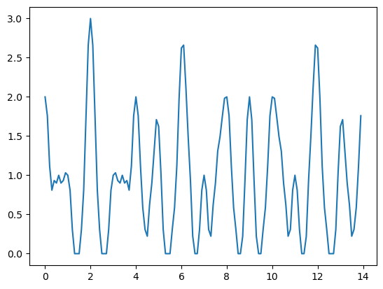

Notebook source code: notebooks/12_path_int.ipynb
In [2]:
import setup
setup.main()
%load_ext autoreload
%autoreload 2
%load_ext jupyter_black
import os
import matplotlib.pyplot as plt
import numpy as np
os.environ["GEOMSTATS_BACKEND"] = "pytorch"
Working directory: /home/facosta/neurometry/neurometry
Directory added to path: /home/facosta/neurometry
Directory added to path: /home/facosta/neurometry/neurometry
The autoreload extension is already loaded. To reload it, use:
%reload_ext autoreload
The jupyter_black extension is already loaded. To reload it, use:
%reload_ext jupyter_black
In [3]:
def relu(x):
return np.maximum(x, 0)
In [51]:
x = np.arange(0, 14, 0.1)
period_1 = 1
period_2 = 1.4
period_3 = 2
phases_1 = (2 * np.pi * x / period_1) % (2 * np.pi)
phases_2 = (2 * np.pi * x / period_2) % (2 * np.pi)
phases_3 = (2 * np.pi * x / period_3) % (2 * np.pi)
In [52]:
def grid_cell(period, phase):
def rate(x):
return relu(np.cos(2 * np.pi * x / period - phase))
return rate
module_1 = [rate(x) for rate in [grid_cell(period_1, phase) for phase in phases_1]]
module_2 = [rate(x) for rate in [grid_cell(period_2, phase) for phase in phases_2]]
module_3 = [rate(x) for rate in [grid_cell(period_3, phase) for phase in phases_3]]
In [53]:
plt.plot(x, module_1[0], label="module 1")
plt.plot(x, module_2[0], label="module 2")
plt.plot(x, module_3[0], label="module 3");

In [54]:
pos = 2
idx = round(pos / max(x) * len(x))
plt.plot(x, module_1[idx] + module_2[idx] + module_3[idx], label="sum");

In [55]:
def place_cell(loc, width):
def rate(x):
return np.exp(-((x - loc) ** 2) / (2 * width**2))
return rate
In [56]:
width = 1
place_cells = [rate(x) for rate in [place_cell(loc, width) for loc in x]]
In [90]:
pos = 4
idx = round(pos / max(x) * len(x))
# compute fourier transform of the place cell
fourier_coefficients = np.fft.fft(place_cells[idx])
num_modules = 3
modified_coefficients = np.zeros_like(fourier_coefficients)
modified_coefficients[: num_modules + 1] = fourier_coefficients[: num_modules + 1]
if num_modules > 1: # Preserve symmetry for real signals
modified_coefficients[-(num_modules - 1) :] = fourier_coefficients[
-(num_modules - 1) :
]
# Inverse Fourier transform to reconstruct the signal
reconstructed_signal = np.fft.ifft(modified_coefficients)
plt.plot(x, place_cells[idx], label="place cell")
plt.plot(x, reconstructed_signal, label="reconstructed place cell")
plt.xlabel("x")
plt.ylabel(f"Activity of place cell {idx}")
plt.title(f"1D Place cell activity & reconstruction with {num_modules} Fourier modes")
plt.legend();

In [ ]: